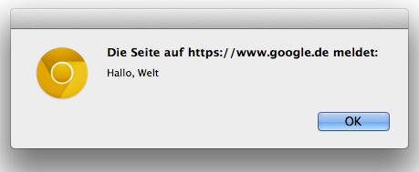

Oliver Zeigermann / http://zeigermann.eu
Web-Version unter: http://zeigermann.eu/non-dev.html
Was muss man tun, um im Browser, ein solches Fenster zu bekommen?
alert("Hallo, Welt");<h1>...</h1> und
<h1 style="font-size: 100px">...</h1> und
alert("Hallo, Welt");
Tags angegeben
<
und enden mit einem Größer-Zeichen >
h1: Heading 1, die größte Überschrift
h2: Heading 2, die nächstkleinere Überschrift
p: Paragraph, ein Absatz
<h1>...</h1>
gibt das erste Tag den Start der Überschrift, das zweite das Ende der Überschrift an
/ vor seinem Namen
<h1 style="font-size: 100px">...</h1> die Größe der Schrift an
<p style="color:blue">Olli</p>
console.log(10);console.log(10 + 10);console.log("Olli hat Kaffeedurst");console.log aus
console.log(10 * (10 + 29));
console.log("Olli");
console.log("Olli".length);)
console.log("Olli".length);
alert auf und übergeben ihr als Parameter, was sie ausgeben soll
alert(10 + 10);console.log(encodeURIComponent("Hallo, Welt"));var vor den Namen der Variablenlaenge hat den Wert 10
var laenge = 10;laenge = 20;alert(laenge);\ bzw. / nehmt ihr bei Objekten den Punkt: .
HTML steht document für den aktuellen Bildschirm
<form>)
<input>)
HTML
<form name="ausgabe">
<input name="laenge">
</form>Setzen des Eingabefelds mit JavaScript über dessen Pfad
document.forms.ausgabe.laenge.value = 10;So bettet ihr das JavaScript direkt in HTML ein
action="javascript:document.forms.ausgabe.laenge.value = 10"Auswerten-Knopf, um das Programm auszuprobieren
function{ ... }
function hallosagen(name) {
alert("Hallo " + name);
}hallosagen("Olli");return zurück gibt, z.B.
function hallotext(name) {
var text = "Hallo " + name;
return text;
}
var text = hallotext("Olli");
console.log(text);
if{ ... }
if (name == "Olli") {
alert("Hallo, Meister!");
}==, <, >, <=, >= vergleicht ihr WerteMit else könnt ihr angeben, was passieren soll, wenn die Bedingung nicht erfüllt ist
if (name == "Olli") {
alert("Hallo, Meister!");
} else {
alert("Hallo!");
}Wir spielen ein Ratespiel
werteFormularAus, die bereits vorliegt
parseInt macht aus einem Text eine Zahl
var box = {
x: 0,
y: 0,
w: 10,
h: 10,
color: 'black',
speed: 5
};
box.x = 100;